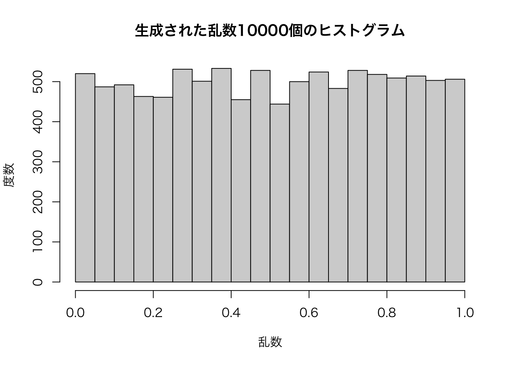

はじめに
- 以下の内容は現在執筆中の内容の一部となります。
- Song Jaehyun・矢内勇生『私たちのR: あなたのために書いたわけじゃない (仮)』(E-book)
Rプログラミング入門の入門
ここでは統計ソフトウェアではなく、プログラミング言語としてのRについて解説します。プログラミングとは難しそうなイメージがありますが、実は難しいです (?!?!)。ただし、プログラミングにおける重要概念は「代入」、「条件分岐」、「反復」この3つだけです。実はこの3つだけでほとんどのプログラムは作れます。しかし、この単純さがプログラミングの難しさでもあります。
たとえば、ある数字列を小さいものから大きい順へ並び替えることを考えてみましょう。c(6, 3, 7, 2, 5, 1, 8, 4)の場合、人間ならあまり苦労することなく、c(1, 2, 3, 4, 5, 6, 7, 8)に並び替えるでしょう。しかし、「代入」、「条件分岐」、「反復」のみでこれを具現化できるでしょうか1。もちろんですが、できます。たしかに、Rにはこのためのsort()関数やorder()関数などが用意されていますし、これを使えば良いのではないかと思うでしょう。しかし、これも「代入」、「条件分岐」、「反復」を組み合わせてR開発チームが予め作っておいた関数です。
「代入」、「条件分岐」、「反復」といった3つの概念さえ理解すれば何でも出来るという意味でプログラミングは簡単です。しかし、この3つだけで解決しないといけないという点でプログラミングは難しいです。ただし、ほとんどのプログラミング言語は既に作られた関数 (bulit-in function)が多く用意されており、それを使うのが賢明です。それでも条件分岐や反復について勉強する必要があるのは、我々一般ユーザーにとってもこれが必要な場面が多いからです。たとえば、同じ分析をデータだけ変えながら複数回走らせるには反復が有効です。これを使えばコードを数十分の一に減らすことも可能です。また、学歴が大卒以上なら「高学歴」、未満なら「その他」にデータを再分類したい場合は条件分岐が非常に便利です。これがないと、一々自分がデータを眺めてExcelなどで入力しないといけませんが、パソコンを使うと秒レベルで終わります。
R言語の基礎概念
これまで「オブジェクト」や「関数」、「引数」などという概念を何の断りもなく使ってきましたが、ここではもうちょっと詳細に定義したいと思います。これらはプログラミングをやっていく上である程度は意識すべき点でもあります。
オブジェクト (object)とはメモリに割り当てられた何かです。それは長さ1のベクトルを含むベクトル、行列、データフレーム、リストだけでなく、後ほど紹介する関数もオブジェクトに含まれます。一般的にオブジェクトとは何かの名前が付いています。たとえば、1から5までの公差1の等比数列なら、
myVec1 <- c(1, 2, 3, 4, 5) # myVec1 <- 1:5も同じのようにmyVec1という名前でオブジェクトに割り当てます。一旦、名前を付けてオブジェクトとしてメモリに割り当てると、今後myVec1と入力するだけで中身の内容を読み込むことができます。それでは以下のように、myVec1の要素を2倍にする操作を考えてみましょう。
myVec1 * 2## [1] 2 4 6 8 10ここでmyVec1はオブジェクトです。それでは2はどうでしょう。メモリに割り当てられていないし、これはオブジェクトではないでしょうか。実は、この数字2もオブジェクトです。計算する瞬間のみにおいてメモリに割り当てられ、計算が終わったらメモリから消されたと考えた方が簡単でしょう。R内の全てのものはオブジェクトです (“Everything that exists in R is an object”)。実は先ほどの*のような演算子すらもオブジェクトです。
クラス (class)とはオブジェクトを特徴づけるものです。既にこれまで何回もclass()関数を作ってデータ型やデータ構造を確認してきましたが、このclass()関数はオブジェクトのクラスを確認する関数です。先ほど、myVec1も*も2もオブジェクトであると説明しましたが、これがオブジェクトということは何らかのクラスを持っていることになります。また、class()関数そのものもオブジェクトであるため、何らかのクラスを持っています。
class(myVec1)## [1] "numeric"class(`*`)## [1] "function"class(2)## [1] "numeric"class(class)## [1] "function"統計言語としてのRでクラスを意識することは多くありません。しかし、Rでパッケージを開発したり、複雑な関数を自作する場合、オブジェクト指向プログラミング (Object-oriented Programming; OOP)の考え方が重要になりますが、その際はオブジェクトのクラスを厳密に定義する必要があります2。
関数 (function)は入力されたデータを、関数内部で決められた手順に沿って処理し、その結果を返すものです。関数は関数名(データ)のように使いますが、class(myVec1)はmyVec1というデータのクラスを返す関数です。また、sum(myVec1)はmyVec1の要素の総和を計算し、返す関数です。関数は自分で作成することも可能です。複雑な行動を繰り返す場合、その行動を関数内部で記述することで、一行でその行動を再現することが可能になります。この関数を使う際に必要なものが引数 (argument)というものです。sum()関数はこれだけだと何もできません。何らかのデータが与えられないと結果は返せません。たとえば、sum(myVec1)のようにです。ここでmyVec1がsum()関数の引数です。また、引数は複数持つことができます。たとえば、欠損値を含む以下のmyVec2を考えてみましょう。
myVec2 <- c(1, 2, 3, NA, 5)これをsum()関数で総和を求めると、結果は欠損値となります。
sum(myVec2)## [1] NAこれはsum()の基本仕様が「欠損値が含まれているなら結果は欠損値にする」ことになっているからです。そこでsum()はもう一つの引数があり、それがna.rm引数です。na.rm = TRUEを指定すると、欠損値を除外した上で総和を返します。
sum(myVec2, na.rm = TRUE)## [1] 11引数を指定する場合はmyVec2のように名前を付けないケースもありますが、ほとんどの場合、na.rm = ...のように、どのような引数かを明示する必要があります。関数によっては数十個の引数を必要する関数もあります。それらの多くはデフォルト値を持っています。たとえば、sum()関数のna.rm引数のデフォルト値はFALSEです。しかし、自分で引数を指定したい場合、その引数がどの引数かを明確にするために、引数名は書いた方が望ましいです。むろん、引数が1つのみの関数なら、省略しても構いませんし、そもそも引数名が付いていない場合もあります。sum()関数の最初の引数はnumericまたはcomplex型のベクトルですが、これらの引数名はそもそもありません。
ある関数がどのような引数を要求しているか、そのデフォルト値は何か、引数として何か決められたデータ型/データ構造があるかを調べるためには?関数名と入力します。ここでは()がないことに注意してください。多くの関数の場合、非常に充実なヘルプが付いているため、関数の具体的な使い方を調べるには?関数名が有用です。
スクリプトの書き方
Rのコードの書き方には正解がありません。文法さえ合っていれば、何の問題もありません。しかし、コードを「書く」仕事以外にも「修正する」仕事も非常に重要です。そのためにはコードの書き手である人間に優しい書き方をした方が良いでしょう。書き方に正解はありませんが、「このように書いたら読みやすい」、「多くの人が採用している書き方」というのはあります。ここではこれについて簡単に説明します。
オブジェクト名
ベクトルやデータフレームなどの変数や自作の関数など、全てのオブジェクトには何らかの名前が付きます。むろん、ラムダ式など、名前のない無名関数などもありますが、多くの場合は名前を持ちます。
名前を付ける決まったルールはありませんが、大事な原則があります。
オブジェクト名は英数字と限られた記号のみにする。数字で始まる変数名は避ける。
むろん、ローマ字以外にも日本語やハングルの変数名も可能ですが、推奨されておりません。ローマ字以外は文字化けの可能性もありますし、コードを書く際、列がずれる原因ともなります。
Variable1 <- c(2, 3, 5, 7, 11) # 推奨
変数1 <- c(2, 3, 5, 7, 11) # 非推奨
변수1 <- c(2, 3, 5, 7, 11) # 非推奨Variable1## [1] 2 3 5 7 11変数1## [1] 2 3 5 7 11변수1## [1] 2 3 5 7 11ただし、数字で始まるオブジェクト名は作成できません。
100A <- "R"## Error: <text>:1:4: 想定外のシンボルです
## 1: 100A
## ^他にも変数名に.と_が入ることは禁じられておらず、むしろ積極的に使われる場合が多いです。
予約語を避ける
また、Rで既に提供している関数やオブジェクト名は避けるべきです。例えば、Rには円周率 (\(\pi\))の数値がpiという名前で含まれています。
pi## [1] 3.141593piという新しい変数を作るのは可能ですが、既存のpiが上書きされるため避けましょう。このようにプロブラミング言語が最初から提供しているオブジェクトの名前を「予約語」といいます。多くのプロブラミング言語は予約語を変数名として使うことを禁じており、Rも一部は禁止されています。たとえば、piは上書き可能ですが、ifやforというオブジェクト名は禁止されています。
pi <- 3if <- "Yanai"## Error: <text>:1:5: 想定外の付値です
## 1: if <-
## ^for <- "All"## Error: <text>:1:5: 想定外の付値です
## 1: for <-
## ^短さと分かりやすさを求める
できれば、オブジェクト名を見るだけで、中身がどのようなものかが分かればベストでしょう。たとえば、学生5人の数学成績が格納されたベクトルを作るとします。
Variable1 <- c(30, 91, 43, 77, 100)これでも問題ありませんが、プロブラミングの世界において変数はVariable1と全て書くよりもVar1やV1のように略す場合が多いです。データ分析の世界だと、変数名をX1やX2にする場合も多いです。しかし、これだけだと中身の内容が想像できません。したがって、変数名は可能な限り中身の内容をよく表現した名前が望ましいです。
mathscore <- c(30, 91, 43, 77, 100)これだと、「あ、この変数には数学成績が入っているんだろうな」と容易に想像できます。ただ、ここで変数の可読性をより高めることも可能です。
MathScore <- c(30, 91, 43, 77, 100)
mathScore <- c(30, 91, 43, 77, 100)
math_score <- c(30, 91, 43, 77, 100)
math.score <- c(30, 91, 43, 77, 100)以上の例はmathとscoreの間に何らかの方法を使って区切りを入れた変数名であり、こちらの方が可読性が高いです。大文字と小文字の組み合わせで区切る方法は「キャメルケース (camel case)」と呼ばれ、大文字から始まるキャメルケースをアッパーキャメルケース (upper camel case)、小文字から始まるキャメルケースをローワーキャメルケース (lower camel case)と呼びます。また、_ (アンダーバー)で区切る方法は「スネークケース (snake case)」と呼ばれます。他にも- (ハイフン)で区切る「チェーンケース (chain case)」というのもありますが、Rの場合、オブジェクト名に-は禁止されております。
最後に.を使う方法がありますが、Rでは使用可能です。しかし、この方法を推奨しない方も多いです。現在、データサイエンスにおけるTop2の言語はRとPythonですが、Pythonの場合、.をメソット呼び出しに使うため、オブジェクト名として使えないからです。RとPython二刀流の方には混乱の原因となりうるため、.を嫌う方もいます。しかし、Rのみ使用する方なら.を使っても問題ありません。
改行
コードは1行が長すぎないように適宜改行します。Rやパッケージなどが提供している関数の中には十数個以上の引数を必要とするケースもあります。この場合、コードを一行に全部書いてしまうと、コードの可読性が著しく落ちてしまします。
一行のどれくらいの文字を入れるべきかについて決まったルールはありませんが、昔は一行80字という基準がよく使われてきました。これま昔のパソコンで使ったパンチカード (図1)が一行に80個の穴を開けることができたのから由来します。

Figure 1: パンチカードの例
今はモニターのサイズも大きくなり、解像度も高くなっているので、80文字にこだわる必要はありません。ただし、少なくとも自分のRStudioのSource Paneに収まるように、改行を適宜行ってください。
スペースとインデント
適切なスペースはコードの可読性を向上させます。以下のコードは全く同じものですが、後者をスペースを入れなかったため、可読性があまりよくありません。
# 良い例
sum(myVec2, na.rm = TRUE)
# 悪い例
sum(myVec2,na.rm=TRUE)どこにスペースを入れるかも決まっておりませんが、「,の後にスペース」、「演算子の前後にスペース」などの例があります。ただし、^の前後にスペースを入れません。また、後ほど紹介するfor(){}、while(){}、if(){}は()前後にスペースを入れます。ただし、function(){}は()の後のみにスペースを入れます。その他の関数の場合、関数名と()の間にスペースは入れません。
また、スペースを2回以上入れるケースもあります。たとえば、あるデータフレームを作るとします。
# 良い例
data.frame(
Name = c("Song", "Yanai", "Hadley"),
Favorite = c("Ramen", "Cat", "R"),
Gender = c("Male", "Male", "Male")
)
# 悪い例
data.frame(
Name = c("Song", "Yanai", "Hadley"),
Favorite = c("Ramen", "Cat", "R"),
Gender = c("Male", "Male", "Male")
)どのコードも同じですが、前者の方が読みやすいです。ここでもう一つ見てもらいのは「字下げ」です。先ほどのコードは以下のように一行にまとめることは可能ですが、あまりにも可読性がよくありません。
# 邪悪な例
data.frame(Name = c("Song", "Yanai", "Hadley"), Favorite = c("Ramen", "Cat", "R"), Gender = c("Male", "Male", "Male"))このように一行のコードが長い場合、「改行」が重要です。ただし、改行した場合、字下げを入れましょう。改行された行は2文字または4文字分の字下げをします。こうすることで、「この行は上の行の続きです」ということは一目で分かります。
# 良い例
data.frame(
Name = c("Song", "Yanai", "Hadley"),
Favorite = c("Ramen", "Cat", "R"),
Gender = c("Male", "Male", "Male")
)
# 悪い例
data.frame(
Name = c("Song", "Yanai", "Hadley"),
Favorite = c("Ramen", "Cat", "R"),
Gender = c("Male", "Male", "Male")
)RStudioは自動的に字下げをしてくれるので、あまり気にする必要がありませんが、メモ帳などでコードを書く際は意識してください。
代入
オブジェクトに値を代入する演算子として、これまでは<-を使ってきましたが、=も使えます。実際、多くのプログラミング言語の場合、代入演算子は=を採用しています。しかし、本書では<-の使用を推奨します。
以上の内容は書き方の一部に過ぎません。本書のコードは出来る限り、多くの人に受け入れられているコードの書き方をするように心がけております。本書のコードを自分の手で書いていくうちに、徐々に書き方が身につくと思います。
最後に、より詳細な書き方のガイドについては以下の2つの資料が非常に参考になります。とりわけ、Hadley先生が書いたThe tidyverse style guideは事実上 (de facto)の業界標準であり、Google’s Style GuideはHadley先生が書いたスタイルガイドに基づいています。かなりの分量ですが、自分でパッケージ開発などを考えている場合は必ず一回目を通しておきましょう。
反復
パソコンが最も得意とすることが「反復作業」です。普通の人間なら数時間〜数年かかるような退屈な反復作業を、パソコンを一瞬で終わらせます。Rもプログラミング言語である以上、反復作業のための様々な関数を提供しております。
反復作業を行う際は、「いつまで繰り返せば良いのか」を考えなくてはありません。そこで、2つのケースが考えられます。
- 指定した回数だけ処理を繰り返す場合:
for()文 - 一定の条件が満たされるまで処理を繰り返す場合:
while()文
ここではこの2つのケースそれぞれについて解説します。
for()による反復
まずは、for()文を用いた反復処理のコードの雛形をみてみましょう。
for (任意の変数 in ベクトル) {
処理内容
}任意の変数は何でもいいんですが、よく使うのはiです (indexの意味)。この変数はfor(){}文の内部で使うために用いられる変数です。そして、inの後の「ベクトル」は長さ1以上のベクトルです。必ずしもnumeric型である必要はありません。
また、{}内の内容が1行くらいで短い場合、{}は省略することもできます。したがって、以下のような書き方も可能です。これはfor()だけでなく、if()やfunction()など、{}で処理内容を囲む関数において共通です。この場合、処理内容を()の直後に書くのが一般的です。例えば、以下のように書きます。
for (任意の変数 in ベクトル) 処理内容ただし、処理内容が2行以上の場合は、必ず{}で囲んでください。
まずは、単にN回繰り返すfor()文を書いてみましょう。任意の変数名はiとします。この場合、for (i in 1:N)と書きます。5回繰り返すならfor (i in 1:5)となります。1:5はc(1, 2, 3, 4, 5)と同じですので、for (i in c(1, 2, 3, 4, 5))でも構いませんが、効率はよくありません。
とりあえず、以下のようにコードを作成し、走らせてみましょう。これは3行にわたるコードですので、Rコンソールで打ち込むのは非効率的です。必ずソースコード欄に書いて、forの行にカーソルを置いた状態でCmd + Enter (Windowsの場合、Contrl + Enter)を入力しましょう。むろん、この3行を全て選択してからCmd + Enterを押しても構いません。
for (i in 1:5) {
print(i)
}## [1] 1
## [1] 2
## [1] 3
## [1] 4
## [1] 5# 上記のコードはこのように書くことも可能
# for(i in 1:5) print(i)1から5までの数字が表示されました。これは一体、どのような動きをしているのでしょうか。これから詳しく解説します。
iにベクトル1:5の最初の要素を代入 (i = 1)print(i)を実行{}中身の処理が終わったらiにベクトル1:5内の次の要素を代入 (i = 2)print(i)を実行{}中身の処理が終わったらiにベクトル1:5内の次の要素を代入 (i = 3)print(i)を実行{}中身の処理が終わったらiにベクトル1:5内の次の要素を代入 (i = 4)print(i)を実行{}中身の処理が終わったらiにベクトル1:5内の次の要素を代入 (i = 5)print(i)を実行{}中身の処理が終わったらiにベクトル1:5内の次の要素を代入するが、5が最後なので反復終了
以上のような手順でfor()文は作動します。この手順を要約すると以下のようになります。
- 任意の変数 (ここでは
i)にベクトル (ここでは1:5)の最初の要素が格納され、{}内の処理を行う。 {}内の処理が終わったら、ベクトル (ここでは1:5)の次の要素を任意の変数 (ここではi)に格納し、{}内の処理を行う。- 格納できる要素がなくなったら反復を終了する。
- したがって、反復はベクトル (ここでは
1:5)の長さだけ実行される (ここでは5回)。
- したがって、反復はベクトル (ここでは
反復はベクトルの長さだけ実行されるので、1:5のような書き方でなく、普通のベクトルでも問題ありません。たとえば、長さ6のIter_Vec1というベクトルを作り、その要素を出力するコードを書いてみましょう。
Iter_Vec1 <- c(24, 64, 31, 46, 81, 102)
for (damage in Iter_Vec1) {
x <- paste0("トンヌラに", damage, "のダメージ!!")
print(x)
}## [1] "トンヌラに24のダメージ!!"
## [1] "トンヌラに64のダメージ!!"
## [1] "トンヌラに31のダメージ!!"
## [1] "トンヌラに46のダメージ!!"
## [1] "トンヌラに81のダメージ!!"
## [1] "トンヌラに102のダメージ!!"スライムを倒すには十分な攻撃力を持つ勇者ですね。ちなみに、paste0()は引数を空白なし3で繋ぎ、文字列として返す関数です。詳細割愛しますが、簡単な例だけお見せします。
paste0("私は", "Rが", "使えません。")## [1] "私はRが使えません。"paste0("私の", "英語成績は", 0, "点です。")## [1] "私の英語成績は0点です。"むろん、文字列のベクトルを使うことも可能です。10個の都市名が格納されたIter_Vec2の要素を一個ずつ出力するコードは以下のようになります。
Iter_Vec2 <- c("Sapporo", "Sendai", "Tokyo", "Yokohama", "Nagoya",
"Kyoto", "Osaka", "Kobe", "Hiroshima", "Fukuoka")
for (city in Iter_Vec2) {
x <- paste0("現在、cityの値は", city, "です。")
print(x)
}## [1] "現在、cityの値はSapporoです。"
## [1] "現在、cityの値はSendaiです。"
## [1] "現在、cityの値はTokyoです。"
## [1] "現在、cityの値はYokohamaです。"
## [1] "現在、cityの値はNagoyaです。"
## [1] "現在、cityの値はKyotoです。"
## [1] "現在、cityの値はOsakaです。"
## [1] "現在、cityの値はKobeです。"
## [1] "現在、cityの値はHiroshimaです。"
## [1] "現在、cityの値はFukuokaです。"次は、for()の外にあるオブジェクトを参照するfor()文について説明します。たとえば、"1番目の都市名はSapporoです"、"2番目の都市名はSendaiです"、…のように出力するにはどうすれば良いでしょうか。今までは一箇所だけ変えながら表示しましたが、今回は「i番目」と「cityです」の二箇所が変わります。この場合は、まずiを基準に反復を行いながら、Iter_Vec2のi番目要素を呼び出すことで解決できます。以下のコードを見てみましょう。
for (i in 1:length(Iter_Vec2)) {
msg <- paste0(i, "番目の都市名は", Iter_Vec2[i], "です。")
print(msg)
}## [1] "1番目の都市名はSapporoです。"
## [1] "2番目の都市名はSendaiです。"
## [1] "3番目の都市名はTokyoです。"
## [1] "4番目の都市名はYokohamaです。"
## [1] "5番目の都市名はNagoyaです。"
## [1] "6番目の都市名はKyotoです。"
## [1] "7番目の都市名はOsakaです。"
## [1] "8番目の都市名はKobeです。"
## [1] "9番目の都市名はHiroshimaです。"
## [1] "10番目の都市名はFukuokaです。"ここではfor (i in 1:10)ではなく、for (i in 1:length(Iter_Vec2))と表記しましたが、前者よりも後者の方が望ましい書き方です。なぜなら、もし事後的にIter_Vec2に都市名を2つ追加した場合、前者だと1:12と修正する必要がありますが、後者はlength()関数でIter_Vec2の長さを計算してくれるからです。
多重for()文について
for()文の中に、更にfor()文を使用することも可能です。最初はやや難しいかも知れませんが、多重反復はプログラミングでもよく使われるので4、この機会に勉強しておきましょう。
この多重for()文の定番の例は(掛け算)九九です。1から9まで、全ての組み合わせの掛け算を計算するためには、2つのfor()文が必要です。i * jでiとjそれぞれに1から9を代入しながら結果を出力するコードは以下のように書きます。
for (i in 1:9) {
for (j in 1:9) {
print(paste(i, "*", j, "=", i * j))
}
}## [1] "1 * 1 = 1"
## [1] "1 * 2 = 2"
## [1] "1 * 3 = 3"
## [1] "1 * 4 = 4"
## [1] "1 * 5 = 5"
## [1] "1 * 6 = 6"
## [1] "1 * 7 = 7"
## [1] "1 * 8 = 8"
## [1] "1 * 9 = 9"
## [1] "2 * 1 = 2"
## [1] "2 * 2 = 4"
## [1] "2 * 3 = 6"
## [1] "2 * 4 = 8"
## [1] "2 * 5 = 10"
## [1] "2 * 6 = 12"
## [1] "2 * 7 = 14"
## [1] "2 * 8 = 16"
## [1] "2 * 9 = 18"
## [1] "3 * 1 = 3"
## [1] "3 * 2 = 6"
## [1] "3 * 3 = 9"
## [1] "3 * 4 = 12"
## [1] "3 * 5 = 15"
## [1] "3 * 6 = 18"
## [1] "3 * 7 = 21"
## [1] "3 * 8 = 24"
## [1] "3 * 9 = 27"
## [1] "4 * 1 = 4"
## [1] "4 * 2 = 8"
## [1] "4 * 3 = 12"
## [1] "4 * 4 = 16"
## [1] "4 * 5 = 20"
## [1] "4 * 6 = 24"
## [1] "4 * 7 = 28"
## [1] "4 * 8 = 32"
## [1] "4 * 9 = 36"
## [1] "5 * 1 = 5"
## [1] "5 * 2 = 10"
## [1] "5 * 3 = 15"
## [1] "5 * 4 = 20"
## [1] "5 * 5 = 25"
## [1] "5 * 6 = 30"
## [1] "5 * 7 = 35"
## [1] "5 * 8 = 40"
## [1] "5 * 9 = 45"
## [1] "6 * 1 = 6"
## [1] "6 * 2 = 12"
## [1] "6 * 3 = 18"
## [1] "6 * 4 = 24"
## [1] "6 * 5 = 30"
## [1] "6 * 6 = 36"
## [1] "6 * 7 = 42"
## [1] "6 * 8 = 48"
## [1] "6 * 9 = 54"
## [1] "7 * 1 = 7"
## [1] "7 * 2 = 14"
## [1] "7 * 3 = 21"
## [1] "7 * 4 = 28"
## [1] "7 * 5 = 35"
## [1] "7 * 6 = 42"
## [1] "7 * 7 = 49"
## [1] "7 * 8 = 56"
## [1] "7 * 9 = 63"
## [1] "8 * 1 = 8"
## [1] "8 * 2 = 16"
## [1] "8 * 3 = 24"
## [1] "8 * 4 = 32"
## [1] "8 * 5 = 40"
## [1] "8 * 6 = 48"
## [1] "8 * 7 = 56"
## [1] "8 * 8 = 64"
## [1] "8 * 9 = 72"
## [1] "9 * 1 = 9"
## [1] "9 * 2 = 18"
## [1] "9 * 3 = 27"
## [1] "9 * 4 = 36"
## [1] "9 * 5 = 45"
## [1] "9 * 6 = 54"
## [1] "9 * 7 = 63"
## [1] "9 * 8 = 72"
## [1] "9 * 9 = 81"まずは、iに1が代入されます。そして、jに1から9が一つずつ入れ替わるので、1 * 1、1 * 2、1 * 3、…、1 * 9が計算されます。1 * 9の計算が終わったらiに2が代入され、再び内側のfor()文が実行され、2 * 1、2 * 2、2 * 3、…、2 * 9が計算されます。これを9の段まで繰り返します。もし、9の段から1の段の順にしたい場合は、i in 1:9をi in 9:1に変えるだけです。
for (i in 9:1) {
for (j in 1:9) {
print(paste(i, "*", j, "=", i * j))
}
}## [1] "9 * 1 = 9"
## [1] "9 * 2 = 18"
## [1] "9 * 3 = 27"
## [1] "9 * 4 = 36"
## [1] "9 * 5 = 45"
## [1] "9 * 6 = 54"
## [1] "9 * 7 = 63"
## [1] "9 * 8 = 72"
## [1] "9 * 9 = 81"
## [1] "8 * 1 = 8"
## [1] "8 * 2 = 16"
## [1] "8 * 3 = 24"
## [1] "8 * 4 = 32"
## [1] "8 * 5 = 40"
## [1] "8 * 6 = 48"
## [1] "8 * 7 = 56"
## [1] "8 * 8 = 64"
## [1] "8 * 9 = 72"
## [1] "7 * 1 = 7"
## [1] "7 * 2 = 14"
## [1] "7 * 3 = 21"
## [1] "7 * 4 = 28"
## [1] "7 * 5 = 35"
## [1] "7 * 6 = 42"
## [1] "7 * 7 = 49"
## [1] "7 * 8 = 56"
## [1] "7 * 9 = 63"
## [1] "6 * 1 = 6"
## [1] "6 * 2 = 12"
## [1] "6 * 3 = 18"
## [1] "6 * 4 = 24"
## [1] "6 * 5 = 30"
## [1] "6 * 6 = 36"
## [1] "6 * 7 = 42"
## [1] "6 * 8 = 48"
## [1] "6 * 9 = 54"
## [1] "5 * 1 = 5"
## [1] "5 * 2 = 10"
## [1] "5 * 3 = 15"
## [1] "5 * 4 = 20"
## [1] "5 * 5 = 25"
## [1] "5 * 6 = 30"
## [1] "5 * 7 = 35"
## [1] "5 * 8 = 40"
## [1] "5 * 9 = 45"
## [1] "4 * 1 = 4"
## [1] "4 * 2 = 8"
## [1] "4 * 3 = 12"
## [1] "4 * 4 = 16"
## [1] "4 * 5 = 20"
## [1] "4 * 6 = 24"
## [1] "4 * 7 = 28"
## [1] "4 * 8 = 32"
## [1] "4 * 9 = 36"
## [1] "3 * 1 = 3"
## [1] "3 * 2 = 6"
## [1] "3 * 3 = 9"
## [1] "3 * 4 = 12"
## [1] "3 * 5 = 15"
## [1] "3 * 6 = 18"
## [1] "3 * 7 = 21"
## [1] "3 * 8 = 24"
## [1] "3 * 9 = 27"
## [1] "2 * 1 = 2"
## [1] "2 * 2 = 4"
## [1] "2 * 3 = 6"
## [1] "2 * 4 = 8"
## [1] "2 * 5 = 10"
## [1] "2 * 6 = 12"
## [1] "2 * 7 = 14"
## [1] "2 * 8 = 16"
## [1] "2 * 9 = 18"
## [1] "1 * 1 = 1"
## [1] "1 * 2 = 2"
## [1] "1 * 3 = 3"
## [1] "1 * 4 = 4"
## [1] "1 * 5 = 5"
## [1] "1 * 6 = 6"
## [1] "1 * 7 = 7"
## [1] "1 * 8 = 8"
## [1] "1 * 9 = 9"九九を覚える際はこれで良いでしょうが、i * jとj * iは実質的に同じですから、片方だけ出力させても問題はないでしょう。これはどうすれば良いでしょうか。この場合、for (j in 1:9)をfor (j in 1:i)に変えるだけです。
for (i in 1:9) {
for (j in 1:i) {
print(paste(i, "*", j, "=", i * j))
}
}## [1] "1 * 1 = 1"
## [1] "2 * 1 = 2"
## [1] "2 * 2 = 4"
## [1] "3 * 1 = 3"
## [1] "3 * 2 = 6"
## [1] "3 * 3 = 9"
## [1] "4 * 1 = 4"
## [1] "4 * 2 = 8"
## [1] "4 * 3 = 12"
## [1] "4 * 4 = 16"
## [1] "5 * 1 = 5"
## [1] "5 * 2 = 10"
## [1] "5 * 3 = 15"
## [1] "5 * 4 = 20"
## [1] "5 * 5 = 25"
## [1] "6 * 1 = 6"
## [1] "6 * 2 = 12"
## [1] "6 * 3 = 18"
## [1] "6 * 4 = 24"
## [1] "6 * 5 = 30"
## [1] "6 * 6 = 36"
## [1] "7 * 1 = 7"
## [1] "7 * 2 = 14"
## [1] "7 * 3 = 21"
## [1] "7 * 4 = 28"
## [1] "7 * 5 = 35"
## [1] "7 * 6 = 42"
## [1] "7 * 7 = 49"
## [1] "8 * 1 = 8"
## [1] "8 * 2 = 16"
## [1] "8 * 3 = 24"
## [1] "8 * 4 = 32"
## [1] "8 * 5 = 40"
## [1] "8 * 6 = 48"
## [1] "8 * 7 = 56"
## [1] "8 * 8 = 64"
## [1] "9 * 1 = 9"
## [1] "9 * 2 = 18"
## [1] "9 * 3 = 27"
## [1] "9 * 4 = 36"
## [1] "9 * 5 = 45"
## [1] "9 * 6 = 54"
## [1] "9 * 7 = 63"
## [1] "9 * 8 = 72"
## [1] "9 * 9 = 81"これは1の段は1 * 1まで、2の段は2 * 2まで、3の段は3 * 3まで計算し、出力するコードです。2の段の場合、2 * 3や2 * 9などが出力されませんが、これは3の段において3 * 2が、9の段で9 * 2が出力されるので問題ないでしょう。このように多重for()文は複数のベクトルの組み合わせ全てにおいて処理を行う場合、有効です。
複数のベクトルでなく、データフレームなどの2次元以上データにも多重for()文は使われます。データフレームは複数のベクトルで構成されているため、実質的には複数のベクトルを扱うことになります。今回は例として、FIFA_Men.csvを利用し、それぞれの国のチーム名、FAFAランキング、ポイントをまとめて表示するコードを書いてみます。全てのチームを出すと結果が長くなるので、OFC (オセアニアサッカー連盟)所属チームだけに絞ります。
# FIFA_Men.csvを読み込み、myDFという名で保存
# ファイルのパスは適宜修正してください
myDF <- read.csv("Data/FIFA_Men.csv")
# myDFのConfederation列がOFCの行だけを抽出
myDF <- myDF[myDF$Confederation == "OFC", ]
myDF## ID Team Rank Points Prev_Points Confederation
## 4 4 American Samoa 192 900 900 OFC
## 69 69 Fiji 163 996 996 OFC
## 135 135 New Caledonia 156 1035 1035 OFC
## 136 136 New Zealand 122 1149 1149 OFC
## 147 147 Papua New Guinea 165 991 991 OFC
## 159 159 Samoa 194 894 894 OFC
## 171 171 Solomon Islands 141 1073 1073 OFC
## 185 185 Tahiti 161 1014 1014 OFC
## 191 191 Tonga 203 862 862 OFC
## 204 204 Vanuatu 163 996 996 OFCちょうど10チームとなります。作りたいのは以下のような内容が表示されるコードです。
=====1番目の国家情報=====
Team: American Samoa
Rank: 192
Points: 900
=====2番目の国家情報=====
Team: Fiji
Rank: 163
Points: 996
=====3番目の国家情報=====
Team: New Caledonia
...実はこれ、一つのfor()でも作成できますが、勉強のために2つのfor()文を使いましょう。
for (i in 1:nrow(myDF)) {
print(paste0("=====", i, "番目の国家情報====="))
for (j in c("Team", "Rank", "Points")) {
print(paste0(j, ": ", myDF[i, j]))
}
}以上のコードを実行すると以下のような結果が表示されます。ここでは全部掲載するのは長いので、最初の2チーム情報のみ掲載します。
## [1] "=====1番目の国家情報====="
## [1] "Team: American Samoa"
## [1] "Rank: 192"
## [1] "Points: 900"
## [1] "=====2番目の国家情報====="
## [1] "Team: Fiji"
## [1] "Rank: 163"
## [1] "Points: 996"それではコードの詳細について説明します。まず、外側のfor()文には任意の変数としてはiを、内側のfor()文に対してはjを用います。Rの場合、コードは上からの順番で処理します（同じ行なら、カッコの中から処理します）。したがって、まず処理されるのは外側のfor()文です。iに割り当てられたベクトルは1:nrow(myDF)です。nrow()は行列またはデータフレームの行数を求める関数で、今回の場合、myDFは10行のデータであるため、1:10になります。つまり、外側のfor()文はiに1, 2, 3…の順で値を格納しながら10回処理を繰り返すことになります。それでは外側for()文の中身を見ましょう。ここではまず、"=====i番目の国家情報====="というメッセージを出力します。最初はiが1ですので、"=====1番目の国家情報====="が表示されます。
次の行からが内側のfor()文になります。ここではjにc("Team", "Rank", "Points")を格納しながら内側for()文内のコードを3回繰り返します。内側のコード内容は例えば、i = 1の状態で、j = "Team"なら、print(paste0("Team", ": ", myDF[1, "Team"]))になります。つまり、myDF[1, "Team"]はmyDFのTeam列の1番目の要素を意味します。この処理が終わったら、次はjに"Rank"が代入され、同じコードを処理します。そして、j = "Points"まで処理が終わったら、内側のfor()文の役目はとりあえず終わりです。
内側のfor()文が終わっても、外側のfor()文はまだ終わっておりません。次はiに2が格納され、"=====2番目の国家情報====="を表示し、また内側のfor()文を最初から処理します。この作業はi = 10の状態で内側のfor()文が終わる時点で、外側のfor()文も止まります。これが多重for()文の動き方です。
もし、チーム名の次に、所属連盟も表示したい場合はどう直せば良いでしょうか。正解はc("Team", "Rank", "Points")のベクトルにおいて、"Team"と"Rank"の間に"Confederation"を追加するだけです。実際にやってみましょう (結果は紙幅の関係上、最初の2チームのみ掲載します)。
for (i in 1:nrow(myDF)) {
print(paste0("=====", i, "番目の国家情報====="))
for (j in c("Team", "Confederation", "Rank", "Points")) {
print(paste0(j, ": ", myDF[i, j]))
}
}## [1] "=====1番目の国家情報====="
## [1] "Team: American Samoa"
## [1] "Confederation: OFC"
## [1] "Rank: 192"
## [1] "Points: 900"
## [1] "=====2番目の国家情報====="
## [1] "Team: Fiji"
## [1] "Confederation: OFC"
## [1] "Rank: 163"
## [1] "Points: 996"ちなみに、同じ動きをする別の書き方は以下のとおりです。結果は掲載しませんが、興味のある方は試してみて下さい。cat()関数の使い方については?catを参照してください。ちなみに\nは改行コードを意味します。
for (i in 1:nrow(myDF)) {
cat(paste0("=====", i, "番目の国家情報=====\n"))
cat(paste0("Team:", myDF$Team[i], "\n",
"Rank:", myDF$Rank[i], "\n",
"Points:", myDF$Points[i], "\n"))
}もう一つの例を見たいと思います。今回はリスト型を対象とした多重反復の例です。複数のベクトルを含むリストの場合、3番目のベクトルの5番目の要素を抽出するにはリスト名[[3]][5]のように2つの位置を指定する必要があります。たとえば、以下の3人で構成された3つのクラスがあるとし、そのグループ構成人の名前が出席番号順で入っているmyListを考えましょう。
myList <- list(Class_A = c("Yanai", "Song", "Hadley"),
Class_B = c("Tanaka", "Sato", "Suzuki"),
Class_C = c("Abe", "Moon", "Xi"))ここで、まず各クラスの出席番号1番の人の名字3つを出力し、次は2番の人、最後に3番の人を出すにはどうすれば良いでしょうか。以下のコードを見て下さい。
for (i in 1:3) {
for (j in names(myList)) {
print(myList[[j]][i])
}
print(paste0("===ここまでが出席番号", i, "番の人です==="))
}## [1] "Yanai"
## [1] "Tanaka"
## [1] "Abe"
## [1] "===ここまでが出席番号1番の人です==="
## [1] "Song"
## [1] "Sato"
## [1] "Moon"
## [1] "===ここまでが出席番号2番の人です==="
## [1] "Hadley"
## [1] "Suzuki"
## [1] "Xi"
## [1] "===ここまでが出席番号3番の人です==="以上のコードは以下のように動きます。
- 1行目: 任意の変数を
iとし、1から3までの数字をiに格納しながら、3回反復作業を行います。 - 3行目: 任意の変数を
jとし、ここにはリストの要素名を格納しながら、リストの長さだけ、処理を繰り返します。names(myList)はc("Class_A", "Class_B", "Class_C")と同じです。 - 4行目:
myList[[j]][i]の内容を出力します。最初はi = 1、j = "Class_A"なので、print(myList[["Class_A"]][1])、つまり、myListから"Class_A"を取り出し、そこの1番目の要素を出力するという意味です。 - 7行目: 各ベクトルから
i番目の要素を出力したら、print(paste0("===ここまでが出席番号", i, "番の人です==="))を実行し、iに次の要素を入れて、反復作業を続きます。iに格納する要素がなくなったら、反復を中止します。
多重for()文は3重、4重も可能ですが、コードの可読性が低下するため、多くても3つ、できれば最大2つが良いです。3重以上にfor()文を重ねる場合は内側のfor()文を後ほど解説する関数でまとめるのがおすすめです。
while()による反復
for()文は任意の変数にベクトルの要素を1つずつ入れ替えながら、ベクトルの要素を使い尽くすまで反復処理を行います。一方、「ある条件が満たされる限り、反復し続ける」ことも可能であり、この際使う関数がwhile()文です。while()文の書き方はfor()文に非常に似ています。
while (条件) {
条件が満たされた場合の処理内容
}forがwhileに変わり、()内の書き方が(任意の変数 in ベクトル)から(条件)に変わりました。この()内の条件が満たされる間は{}内の内容を処理します。1から5を表示するコードはfor()文を使う場合、以下のようになります。
# for文を使う場合
for (i in 1:5) {
print(i)
}これをwhile()を使って再現すると以下のようなコードとなります。
# while文を使う場合
i <- 1
while (i <= 5) {
print(i)
i <- i + 1
}## [1] 1
## [1] 2
## [1] 3
## [1] 4
## [1] 5while()内の条件はi <= 5、つまり「iが5以下なら以下の内容を処理する」ことを意味します。注意すべきところはiが5以下か否かの判断は最初から行われるため、予め変数iを指定しておく必要があります。最初に出てくるi <- 1がそれです。そして、{}内にはi <- i + 1を追加し、iを1を足していきます。i = 5の時点ではprint(i)が実行されますが、i = 6になった瞬間、反復は停止します。
もう一つ注意すべきところはi <- i + 1の位置です。以下は先ほどと同じコードですが、i <- i + 1がprint(i)の前に位置するコードです。
i <- 1
while (i <= 5) {
i <- i + 1
print(i)
}## [1] 2
## [1] 3
## [1] 4
## [1] 5
## [1] 6今回は2から6まで出力されました。これはiを出力する前にiに1が足されるからです。そして、i = 5の状態で、iに1が足されることとなり、6が出力されます。もし、i <- i + 1をprint(i)より前に置いたまま、1から5を出力させる場合は、以下のようにコードを修正する必要があります。
i <- 0
while (i <= 4) {
i <- i + 1
print(i)
}## [1] 1
## [1] 2
## [1] 3
## [1] 4
## [1] 5変更点は1)iの初期値が0となった点と、2) ()内の条件が(i <= 5)から(i <= 4)に変わった点です。
while()による書き方は慣れないとややこしいと感じる方も多いかと思います。また、for()文で代替できるケースも多いです。それでもwhile()文を使うケースはあります。それは先述した通り、「目標が決まっているが、その目標が達成されるまでは何回繰り返せば分からない時」においてwhile()文は効果的です。
たとえば、6面サイコロ投げを考えてみましょう。投げる度に出た目を記録し、その和が30以上に達した瞬間、サイコロ投げを中止します。この場合、何回サイコロを投げる必要があるでしょうか。連続で6が出るなら5回で十分ですが、ずっと1のみが出るなら30回投げる必要があります。このように、「反復処理は行うが、何回行えばいいか分からない。ただし、いつやめるかは知っている」場合にwhile()文を使います。以下はwhile()文を使ったコードです。
Total <- 0
Trial <- 1
while (Total < 30) {
Dice <- sample(1:6, 1)
Total <- Total + Dice
print(paste0(Trial, "回目のサイコロ投げの結果: ", Dice,
"(これまでの総和: ", Total, ")"))
# print()文は以下のような書き方も可能
# Result <- sprintf("%d回目のサイコロ投げの結果: %d (これまでの総和: %d)",
# Trial, Dice, Total)
# print(Result)
Trial <- Trial + 1
}## [1] "1回目のサイコロ投げの結果: 2(これまでの総和: 2)"
## [1] "2回目のサイコロ投げの結果: 6(これまでの総和: 8)"
## [1] "3回目のサイコロ投げの結果: 6(これまでの総和: 14)"
## [1] "4回目のサイコロ投げの結果: 4(これまでの総和: 18)"
## [1] "5回目のサイコロ投げの結果: 6(これまでの総和: 24)"
## [1] "6回目のサイコロ投げの結果: 5(これまでの総和: 29)"
## [1] "7回目のサイコロ投げの結果: 2(これまでの総和: 31)"それでは、コードの説明をします。まず、これまで出た目の和を記録する変数Totalを用意し、初期値として0を格納します。また、何回目の投げかを記録するためのTrial変数を記録し、初期値として1を格納しておきます (コードの1、2行目)。
続いてwhile()文を入れます。反復する条件はTotalが30より小さい場合と設定します。つまり、Totalが30以上になったら反復を終了することを意味します (コードの4行目)。
つづいて、サイコロ投げをし、出た目をDiceという変数に格納します。サイコロ投げは1から6の間の整数から無作為に一つを値を抽出することでできます。そこで使われるのがsample()関数です (コードの5行目)。sample()関数は与えられたベクトル内の要素を無作為に抽出する関数です。sample(c(1, 2, 3, 4, 5, 6), 1)は「c(1, 2, 3, 4, 5, 6)から1つの要素を無作為に抽出せよ」という意味です。むろん、複数の要素を抽出することも可能ですし、数値型ベクトルでなく、文字型ベクトルから抽出することも可能です。サイコロ投げをしたら、その目をTotalの値に足します (コードの6行目)。
つづいて、「1回目のサイコロ投げの結果: 5 (これまでの総和: 5)」のように、現在の処理結果を表示させます (コードの8行目)。最後にTrialの値を1増加させて反復を続けます (コードの14行目)。
むろん、for()文を使って再現することも可能であり、以下はfor()を使ったコードになります。
Total <- 0
for (Trial in 1:30) {
Dice <- sample(1:6, 1)
Total <- Total + Dice
# print()の代わりにsprintf()を使うことも可能
Result <- sprintf("%d回目のサイコロ投げの結果: %d (これまでの総和: %d)",
Trial, Dice, Total)
print(Result)
if (Total >= 30) {
break() # ()は省略可能
}
}## [1] "1回目のサイコロ投げの結果: 5 (これまでの総和: 5)"
## [1] "2回目のサイコロ投げの結果: 5 (これまでの総和: 10)"
## [1] "3回目のサイコロ投げの結果: 4 (これまでの総和: 14)"
## [1] "4回目のサイコロ投げの結果: 1 (これまでの総和: 15)"
## [1] "5回目のサイコロ投げの結果: 6 (これまでの総和: 21)"
## [1] "6回目のサイコロ投げの結果: 5 (これまでの総和: 26)"
## [1] "7回目のサイコロ投げの結果: 3 (これまでの総和: 29)"
## [1] "8回目のサイコロ投げの結果: 2 (これまでの総和: 31)"まず、サイコロを何回投げれば良いかは分かりませんが6面サイコロの場合、30回以内には必ず合計30になるので、まずTrial in 1:30とします。あとはwhile()文の書き方とほぼ同じですが、今回はiが自動的に更新されるのでi <- i + 1は不要です。ただし、一定の条件が満たされる場合、for()文を停止する必要があります。そこで登場するのが条件分岐とbreak()です。条件分岐は次節で説明しますが、これは「Totalが30以上になった場合、ループから脱出せよ」を意味します。このループからの脱出を指示する関数がbreak()です。ちなみに、break()関数は()を抜いてbreakと書いても問題ありません。また、if(){}内の処理内容は一行ですので、if (Total >= 30) breakのような書き方でも問題ありません。
これは余談ですが、結果の表示に今回はこれまで使ってきたprint()とpaste0() (またはpaste())を使わず、sprintf()を使いました。人によってはこっちの書き方を好む場合もあります。sprintf()内の%dはその位置に指定された変数の値を整数として代入することを意味します。sprintf()はまず、出力する文字列を指定し、続いて代入する変数を順番に引数として入れます。%sは文字型、%fは実数を意味します。%fの場合、少数点の桁数も指定可能であり、小数点2桁まで表示させる場合は%.2fのように表記します。以下のコードは3つの変数の値と文字列を結合する処理をprint(paste0())とsprintf()を用いて書いたものであり、同じ動きをします。
Name <- "Song"
Score <- 50
Height <- 176.2
print(paste0(Name, "の数学成績は", Score, "点で、身長は", Height, "cmです。"))## [1] "Songの数学成績は50点で、身長は176.2cmです。"# %sにNameを、%dにHeightを、%.1fにHeightを小数点1位まで格納し、出力
sprintf("%sの数学成績は%d点で、身長は%.1fcmです。", Name, Score, Height)## [1] "Songの数学成績は50点で、身長は176.2cmです。"ただし、{}内のsprintf()はそのまま出力されないため、一旦、オブジェクトとして保存し、それをprint()を使って出力させる必要があります。詳細は?sprintfで確認してください。
今回は「多くても30回以内に終わる」ことが分かっていましたが、シミュレーションなどではそれが未知であるケースも多いです。目的に合わせてfor()文とwhile()文を使い分けましょう。
条件分岐
if()、else if()、else()による条件分岐
続いて、条件分岐について説明します。これは何らかの条件が満たされた場合、指定された処理を行うことを意味します。一般的な条件分岐は以下のように書きます。
if (条件) {
条件が満たされた場合の処理内容
}while()文と非常に書き方が似ていることが分かります。ただし、while()文は条件が満たされる限り{}の内容を繰り返して実行する意味を持つ一方、if()文は条件が満たされれば{}の内容を処理して終わるといった違いがあります。たとえば、名前が格納されているオブジェクトNameの中身が"Song"なら「アホ」と出力されるコードを考えてみましょう。
Name <- "Song"
if (Name == "Song") {
print("アホ")
}## [1] "アホ"if()内の条件は「Nameが"Song"」の場合、{}内の内容を処理せよということを意味します。もし、Nameの中身が"Yanai"ならどうでしょうか。
Name <- "Yanai"
if (Name == "Song") {
print("アホ")
}なんの結果も表示されません。if()文単体だと、条件が満たされない場合の処理内容を指定することができません。ここでelse文の出番です。これはif()とセットで使われるものであり、if()内の条件が満たされなかった場合の処理内容を指定します。elseを加えたコードの書き方は以下の通りです。
if (条件) {
条件が満たされた場合の処理内容
} else {
条件が満たされなかった場合の処理内容
}else文は以下のように改行して入れることも可能です。
if (条件) {
条件が満たされた場合の処理内容
}
else {
条件が満たされなかった場合の処理内容
}ただし、一般的なRスクリプトの書き方だと、改行しない方が望ましいです。なぜなら、「このif()文とelseは一つのセットです」ということがより明確になるからです。コードの書き方は人にもよりますが、何らかのこだわりがないなら、改行せずに使いましょう。
それではNameが"Song"じゃない場合、「天才」と表示されるコードを書いてみましょう。
Name <- "Song"
if (Name == "Song") {
print("アホ")
} else {
print("天才")
}## [1] "アホ"Nameが"Song"の場合、前と変わらず「アホ」が出力されます。それではNameを"Yanai"に変えてみましょう。
Name <- "Yanai"
if (Name == "Song") {
print("アホ")
} else {
print("天才")
}## [1] "天才"ちゃんと「天才」が表示されます。しかし、世の中はアホと天才のみで構成されておりません。世界に真の天才はYanaiとShinadaのみ、アホはSongのみだとします。それ以外の人は凡才だとします。つまり、今回はパタンが3つあります。この場合はelse if()をif()とelseの間に挿入します。
if (条件1) {
条件1が満たされた場合の処理内容
} else if (条件2) {
条件1が満たされず、条件2が満たされたい場合の処理内容
} else if (条件3) {
条件1, 2が満たされず、条件3が満たされたい場合の処理内容
} else {
条件が全て満たされなかった場合の処理内容
}これはif()文の条件が満たされたら後の{}内容を処理し、満たされなかったら次のelse if()内の条件を判定する。そして、条件が満たされたら{}の内容が実行され、満たされなかったら次のelse if()へ移動する…といった構造となります。それでは実際のコードを書いてみましょう。
Name <- "Song"
if (Name == "Song") {
print("アホ")
} else if (Name == "Yanai" | Name == "Shinada") {
# 以上の文は } else if (Name %in% c("Yanai", "Shinada")) { もOK
print("天才")
} else {
print("凡才")
}## [1] "アホ"まず、Nameが"Song"か否かを判定し、TRUEなら「アホ」を表示します。もし、FALSEなら次のelse if()文へ移動します。ここではNameが"Yanai"もしくは"Shinada"かを判定します。|は「OR (または)」を意味する論理演算子です。このように条件の中には|や&などの論理演算子を使うことで、複数の条件を指定することができます。また、Name == "Yanai" | Name == "Shinada"はName %in% c("Yanai", "Shinada")に書き換えることができます。x %in% yはxがyに含まれているか否かを判定する演算子です。たとえば、"A" %in% c("A", "B", "C")の結果はTRUEですが、"Z" %in% c("A", "B", "C")の結果はFALSEです。
それではNameを"Yanai"、"Shinada"、"Shigemura"、"Hakiai"に変えながら結果を確認してみましょう。
Name <- "Yanai"
if (Name == "Song") {
print("アホ")
} else if (Name %in% c("Yanai", "Shinada")) {
print("天才")
} else {
print("凡才")
}## [1] "天才"Name <- "Shinada"
if (Name == "Song") {
print("アホ")
} else if (Name %in% c("Yanai", "Shinada")) {
print("天才")
} else {
print("凡才")
}## [1] "天才"Name <- "Shigemura"
if (Name == "Song") {
print("アホ")
} else if (Name %in% c("Yanai", "Shinada")) {
print("天才")
} else {
print("凡才")
}## [1] "凡才"Name <- "Hakiai"
if (Name == "Song") {
print("アホ")
} else if (Name %in% c("Yanai", "Shinada")) {
print("天才")
} else {
print("凡才")
}## [1] "凡才"if()文が単独で使われることは滅多にありません。if()文は主に反復処理を行うfor()またはwhile()文内、もしくは次節で説明する自作関数内に使われる場合がほとんどです。実際、これまで名前からアホ・天才・凡才を判定する度に同じコードを書いてきました。これはあまりにも非効率的です。これを関数としてまとめることが出来るとより使いやすくなります。関数の作成については後ほどで説明します。
ここではfor()文と条件分岐の組み合わせについて考えてみましょう。生徒10人の成績が入っているベクトルScoresがあるとします。そして、成績が60点以上なら「可」を、未満なら「不可」を返すようなコードを書きます。この作業を効率的に行うためにはfor()文とif()文を組み合わせる方法が考えられます。つまり、for()文には任意の変数iに1から10までの数字を入れ替えながら反復を行います。ここでの10はベクトルScoresの長さですので、length(Scores)も問題ありません。そして、Scoresのi番目要素に対して60点以上か否かの判定を行い、「可」または「不可」の結果を返します。以下のコードはその例です。
Scores <- c(58, 100, 81, 97, 71, 61, 47, 60, 73, 85)
for (i in 1:length(Scores)) {
if (Scores[i] >= 60) {
print(paste0("生徒", i, "の判定結果: 可"))
} else {
print(paste0("生徒", i, "の判定結果: 不可"))
}
}## [1] "生徒1の判定結果: 不可"
## [1] "生徒2の判定結果: 可"
## [1] "生徒3の判定結果: 可"
## [1] "生徒4の判定結果: 可"
## [1] "生徒5の判定結果: 可"
## [1] "生徒6の判定結果: 可"
## [1] "生徒7の判定結果: 不可"
## [1] "生徒8の判定結果: 可"
## [1] "生徒9の判定結果: 可"
## [1] "生徒10の判定結果: 可"- 1行目: まず、ベクトル
Scoresを定義します。 - 3行目:
for()文を用います。任意の変数はiとし、ここには1から10を入れ替えながら反復を行います。したがって、i in 1:10でも問題ありませんが、ここではi in 1:length(Scores)にします。こうすることで、Scoresベクトルの長さが変わっても、for()の中身を修正する必要がなくなります。 - 4, 5行目:
Scoresのi番目要素が60点以上かを判定し、TRUEなら「生徒iの判定結果: 可」を出力します。 - 6-8行目:
Scoresのi番目要素が60点以上でない場合、「生徒iの判定結果: 不可」を出力します。
print()内にpaste0()を使うのはコードの可読性がやや落ちるので、sprintf()を使うことも可能です。
Scores <- c(58, 100, 81, 97, 71, 61, 47, 60, 73, 85)
for (i in 1:length(Scores)) {
if (Scores[i] >= 60) {
Result <- sprintf("生徒%dの判定結果: 可", i)
} else {
Result <- sprintf("生徒%dの判定結果: 不可", i)
}
print(Result)
}## [1] "生徒1の判定結果: 不可"
## [1] "生徒2の判定結果: 可"
## [1] "生徒3の判定結果: 可"
## [1] "生徒4の判定結果: 可"
## [1] "生徒5の判定結果: 可"
## [1] "生徒6の判定結果: 可"
## [1] "生徒7の判定結果: 不可"
## [1] "生徒8の判定結果: 可"
## [1] "生徒9の判定結果: 可"
## [1] "生徒10の判定結果: 可"続いて、結果を出力するのではなく、結果を別途のベクトルに格納する例を考えてみましょう。予め長さ10の空ベクトルPFを用意します。ここに各生徒の判定結果を「可/不可」で格納する処理を行います。以下はその例です。
Scores <- c(58, 100, 81, 97, 71, 61, 47, 60, 73, 85)
PF <- rep(NA, length(Scores))
for (i in 1:length(Scores)) {
if (Scores[i] >= 60) {
PF[i] <- "可"
} else {
PF[i] <- "不可"
}
}まず、中身がNAのみで構成されている長さ10の空ベクトルPFを生成します。rep(NA, length(Scores))はNAをlength(Scores)個 (ここでは10個)並べたベクトルを生成する関数です。たとえば、rep(5, 3)はc(5, 5, 5)と同じです。
続いて、条件分岐ですが、今回はメッセージを出力するのではなく、PFのi番目に"可"か"不可"を入れます。以下はその結果です。
PF## [1] "不可" "可" "可" "可" "可" "可" "不可" "可" "可" "可"このように、if()文は反復処理を行うfor()またはwhile()文と組み合わせることで本領発揮となります。実は今回の例ですが、後で説明するifelse()を使うと、一行で処理することができます。ただし、複雑な処理を伴う反復と条件分岐の組み合わせの場合は、今回のようにfor()とif()を組み合わせる必要が出てきます。
ifelse()による条件分岐
ifelse()は与えられたベクトル内の要素に対して条件分岐をし、それを全ての要素に対して繰り返す関数です。簡単な条件分岐と反復処理を同時に行う非常に便利な関数です。ifelse()の使い方は以下の通りです。
ifelse(条件, 条件がTRUEの場合の処理、条件がFALSEの場合の処理)たとえば、生徒10人の成績が入っているベクトルScoresに対して、60点以上の場合、合格 ("Pass")、未満の場合は不合格 ("Fail")の値を割り当て、PFというベクトルに格納するとします。
Scores <- c(58, 100, 81, 97, 71, 61, 47, 60, 73, 85)
PF <- ifelse(Scores >= 60, "Pass", "Fail")
PF## [1] "Fail" "Pass" "Pass" "Pass" "Pass" "Pass" "Fail" "Pass" "Pass" "Pass"条件はScoresが60以上か否かであり、60以上なら"Pass"を、それ以外なら"Fail"を返します。また、返す値は必ず新しい値である必要がありません。一定の条件が満たされたらそのままにし、それ以外なら指定した値を返すことも可能です。たとえば、世論調査では以下のように「答えたくない」または「わからない」を9や99などで記録することがよくあります。この値はこのまま使うのが難しい場合が多く、欠損値として扱う場合があります。
Q. あなたはラーメンが好きですか。
- 1.非常にそう思う
- 2.そう思う
- 3.どちらかと言えばそう思う
- 9.答えたくない
以上の選択肢に対する10人の回答が格納されているデータフレーム (Ramen.df)があるとします。データフレームは2つの列があり、ID列は回答者のID、Ramen列は以上の質問文に対する答えが入っています。
Ramen.df <- data.frame(
ID = 1:10,
Ramen = c(1, 1, 2, 1, 3, 1, 9, 2, 1, 9)
)Ramen.df## ID Ramen
## 1 1 1
## 2 2 1
## 3 3 2
## 4 4 1
## 5 5 3
## 6 6 1
## 7 7 9
## 8 8 2
## 9 9 1
## 10 10 9ここのRamen列に対して、Ramen == 9ならNAを割り当て、それ以外の場合は元の値を割り当てるとします。そしてその結果をRamen.dfのRamen列に上書きします。これは以下のように書くことができます。
Ramen.df$Ramen <- ifelse(Ramen.df$Ramen == 9, NA, Ramen.df$Ramen)
Ramen.df## ID Ramen
## 1 1 1
## 2 2 1
## 3 3 2
## 4 4 1
## 5 5 3
## 6 6 1
## 7 7 NA
## 8 8 2
## 9 9 1
## 10 10 NAこれはRamen.df$Ramenの値が9ならNAを、それ以外なら元の値を格納し、結果をRamen.df$Ramenに上書きすることを意味します。
また、ifelse()の中にifelse()を使うことも可能です。Scoresベクトルの例を考えてみましょう。ここで90点以上ならS、80点以上ならA、70点以上ならB、60点以上ならCを割り当て、それ以外はDを返すとします。この結果をGradeという変数に格納してみましょう。
Grade <- ifelse(Scores >= 90, "S",
ifelse(Scores >= 80 & Scores < 90, "A",
ifelse(Scores >= 70 & Scores < 80, "B",
ifelse(Scores >= 60 & Scores < 70, "C", "D"))))Grade## [1] "D" "S" "A" "S" "B" "C" "D" "C" "B" "A"これはifelse()の条件がFALSEの場合、次のifelse()で判定する仕組みとなっています。しかし、ifelse()を使いすぎるとコードの可読性が非常に落ちてしまうので、あまり例ではありません。しかもifelse()の中にifelse()を書く場合、&や|を用いることが多く、更に可動性が落ちてしまいます。この場合はdplyrパッケージに含まれているcase_when()関数を推奨します。この関数に関しては「dplyr入門」で詳細に説明する予定ですが、ここでは上のコードと同じ処理を行うcase_when()関数を書く方を紹介します。
Grade2 <- dplyr::case_when(Scores >= 90 ~ "S",
Scores >= 80 & Scores < 90 ~ "A",
Scores >= 70 & Scores < 80 ~ "B",
Scores >= 60 & Scores < 70 ~ "C",
Scores < 60 ~ "D")Grade2## [1] "D" "S" "A" "S" "B" "C" "D" "C" "B" "A"switch()による条件分岐
switch()は基本的に与えられた長さ1の文字列5を用いた条件分岐となります。これは単体で使われうことがほぼなく、自作関数内に使われる場合があります。したがって、この節はとりあえず飛ばし、関数の節を読んでから戻ってきてください。
ここでは2つの数値xとyの加減乗除を行う関数myCalcを作成します。この関数はx とy以外にもmethod引数があり、このmethodの値によって行う処理が異なります。たとえば、method = "+"なら足し算を、method = "*"なら掛け算を行う仕組みです。
myCalc <- function(x, y, method) {
switch(method,
"+" = x + y,
"-" = x - y,
"*" = x * y,
"/" = x / y,
stop("method引数は+, -, *, /のみ使用可能です。")
)
}このコードの中身をみてみましょう。重要なのは2行目から8行目の部分です。switch()文の最初の引数は条件を判定する長さ1のベクトルです。ここではこれがmethod引数となります。そして、method引数によって異なる処理を行うわけです。"+" = x + yは「methodの値が"+"の場合、x + yを実行する」ことを意味します。これを他の演算子に対しても指定します。最後の引数は条件に合っていない場合の処理内容です。ここでは"method引数は+, -, *, /のみ使用可能です。"というメッセージを出力させ、関数を中止させるという意味で、stop("method引数は+, -, *, /のみ使用可能です。")を入れました。
むろん、以上のコードはif()文を使うことも可能です。
myCalc <- function(x, y, method) {
if (method == "+") {
return(x + y)
} else if (method == "-") {
return(x - y)
} else if (method == "*") {
return(x * y)
} else if (method == "/") {
return(x / y)
} else {
stop("method引数は+, -, *, /のみ使用可能です。")
}
}また、match.arg()関数を使って事前に使える引数を指定しておき、該当しない場合は関数の処理を中止させることもできます。基本的には上の書き方より以下の書き方が推奨されます。
myCalc <- function(x, y, method = c("+", "-", "*", "/")) {
method <- match.arg(method)
if (method == "+") {
return(x + y)
} else if (method == "-") {
return(x - y)
} else if (method == "*") {
return(x * y)
} else {
return(x / y)
}
}異なる点はfunction()の中にmethodのデフォルト値をベクトルとしてした点です。これは「method引数はこれらの値以外は許さない」ということを意味します。むろん、普通のデフォルト値としてベクトルを指定することも可能ですが、このような使い方もあります。そしてmatch.arg()関数についてですが、これはmethod引数が予め指定されていた引数の値と一致するか否かを判断する関数です。もし、予め指定されていた引数と一致しない場合、エラーを表示させ、処理を中断します。ちなみに、match.arg()はswith()文と組み合わせて使うことも可能です。。
今回の例の場合、switch()文の方が読みやすいコードですが、if()でも十分に使えます。また、条件によって行う処理が複雑な場合はswitch()よりもif()の方が使いやすいです。
myCalc(5, 3, "+")## [1] 8myCalc(5, 3, "-")## [1] 2myCalc(5, 3, "*")## [1] 15myCalc(5, 3, "/")## [1] 1.666667それでは"+"、"-"、"*"、"/"以外の値をmethodに与えたらどうなるでしょうか。ここでは"^"を入れてみましょう。
myCalc(5, 3, "^")## Error in myCalc(5, 3, "^"): method引数は+, -, *, /のみ使用可能です。stop()内に書いたエラーメッセージが表示され、処理は中止されます。
関数の作成
これまでclass()や、sum()、print()など様々な関数を使ってきました。関数は関数名(引数)の書き方をします。関数とは()内の引数のデータを関数内部の手続きに沿って処理し、その結果を返す関数です。したがって、関数は「データだけ違って、同じ処理を行いたい」場合に非常に便利です。
ベクトルc(1, 2, 3, 4, 5)の総和を計算する方法について考えてみましょう。まず、1つ目は単純に足し算をする方法があります。
1 + 2 + 3 + 4 + 5## [1] 15他にも反復処理を使うことも可能です。とりわけ、1:100のようなベクトルを1つ目の方法で記述するのは時間の無駄でしょう。for()文を使った方法は以下のようになります。
Result <- 0
for (i in 1:5) {
Result <- Result + i
}Result## [1] 15数個の数字を足すだけなら方法1の方が楽でしょうし、数百個の数字の場合は方法2の方が効率的です。それでもやはりsum()関数の方が数倍は効率的です。また、関数を使うことで、スクリプトの量をへらすこともできます。1から100までの総和なら、方法2のfor (i in 1:5)をfor (i in 1:100)に変えることで対応可能ですが、それでも全体としては数行のコードで書かなくてもなりません。一方、sum(1:100)なら一行で済みます。
sum()はまだマシな方です。たとえば、回帰分析をしたい場合、毎回回帰分析のコードを一から書くのはあまりにも非効率的です。lm()関数を使うと、データや回帰式などを指定するだけで、一連の作業を全て自動的に行い、その結果を返してくれます。中には回帰式の係数も計算してくれますが、他にも残差や決定係数なども計算してくれます。その意味で、lm()という関数は複数の機能を一つの関数としてまとめたものでもあります。
これらの関数は既にR開発チームが書いた関数ですが、ユーザー側から関数を作成することも可能です。長いコードを書く、同じ作業を繰り返す場合、関数の作成はほぼ必須とも言えます。ここではまず、簡単な関数を作成してみましょう。与えられた数字を二乗し、その結果を返すmyPower()関数を作ってみましょう。
myPower <- function(x) {
x^2
}# 引数が一つしかないので、myPower(24)も可能
myPower(x = 24)## [1] 576それではコードを解説します。関数は以下のように定義されます。
関数名 <- function (引数名) {
処理内容
}まず、関数名をmyPowerとし、それが関数であることを宣言します。そして、この関数の引数の名前はxとします。それが
myPower <- function (x)の部分です。続いて、{}内に処理内容を書きます。今回はx^2であり、これはxの2乗を意味します。そして、関数の処理結果が返されますが、{}内の最後の行が結果として返されます。x^2の部分はreturn(x^2)と書き換えることも可能です。return()は「この結果を返せよ」という意味の関数ですが、返す結果が最後の行である場合、省略可能であり、Hadely先生もこのような書き方を推奨しています。
それでは、もうちょっと複雑な関数を作成してみましょう。ベクトルを引数とし、その和を計算するmySum()という関数です。要するにsum()関数を再現したものです。
# mySum関数を定義し、引数はxのみとする
mySum <- function(x) {
# 結果を格納するベクトルResultを生成し、0を入れておく
Result <- 0
# xの要素をiに一つずつ入れながら反復処理
for (i in x) {
# Resultに既存のResultの値にiを足した結果を上書きする
Result <- Result + i
}
# Resultを返す
Result
}mySum(1:5)## [1] 15普通のsum()関数と同じ動きをする関数が出来上がりました。よく見ると、上で説明した総和を計算する方法2のコードを丸ごと関数内に入っているだけです。変わったところがあるとすれば、for()文であり、for (i in 1:5)がfor (i in x)に変わっただけです。ここのxはmySum <- function (x)のxを意味します。このように関数を一回作成しておくと、これからは総和を出す作業を1行に短縮することができます。
このmySum()ですが、一つ問題があります。それはxに欠損値が含まれている場合、結果がNAになることです。
mySum(c(1, 2, 3, NA, 5))## [1] NA実際、R内蔵関数であるsum()も同じですが、sum()にはna.rm =というもう一つの引数があり、これをTRUEにすることで欠損値を除いた総和が計算できます。つまり、関数は複数の引数を持つことができます。それでは、mySum()を改良してみましょう。ここにもna.rmという関数を追加し、na.rm引数がTRUEの場合、xから欠損値を除いた上で総和を計算するようにしましょう。
mySum <- function(x, na.rm = FALSE) {
if (na.rm == TRUE) {
x <- x[!is.na(x)]
}
Result <- 0
for (i in x) {
Result <- Result + i
}
Result
}mySum(c(1, 2, 3, NA, 5))## [1] NAmySum(c(1, 2, 3, NA, 5), na.rm = FALSE)## [1] NAmySum(c(1, 2, 3, NA, 5), na.rm = TRUE)## [1] 11変わったところは、まずfunction (x)がfunction (x, na.rm = FALSE)になりました。これはxとna.rmの引数が必要であるが、na.rmのデフォルト値はFALSEであることを意味します。デフォルト値が指定されている場合、関数を使用する際、その引数は省略できます。実際、sum()関数のna.rm引数もFALSEがデフォルトとなっており、省略可能となっています。
次は最初に条件分岐が追加されました。ここではna.rmがTRUEの場合、xから欠損値を抜いたベクトルをxに上書きするように指定しました。もし、FALSEならこの処理は行いません。
これでR開発チームが作成したsum()関数と同じものが出来上がりました。それでは引数の順番について簡単に解説し、もうちょっと複雑な関数を作ってみましょう。引数の順番は基本的にfunction()の()内で定義した順番であるなら、引数名を省略することも可能です。
mySum(c(1, 2, 3, NA, 5), TRUE)## [1] 11ただし、順番を逆にすると、以下のようにわけのわからない結果が返されます。
mySum(TRUE, c(1, 2, 3, NA, 5))## Warning in if (na.rm == TRUE) {: 条件が長さが 2 以上なので、最初の 1 つだけが使
## われます## [1] 1任意の順番で引数を指定する場合、引数名を指定する必要があります。
mySum(na.rm = TRUE, x = c(1, 2, 3, NA, 5))## [1] 11自分で関数を作成し、他の人にも使ってもらう場合、引数名、順番、デフォルト値を適切に設定しておくことも大事です。
ちょっと複雑な関数を作ってみよう
それではちょっとした遊び心を込めた関数を作ってみましょう。その名もドラクエ戦闘シミュレーターです。
以下はドラクエ11のダメージ公式です。
- ダメージの基礎値 = (攻撃力 / 2) - (守備力 / 4)
- 0未満の場合、基礎値は0とする
- ダメージの幅 = (ダメージの基礎値 / 16) + 1
- 端数は切り捨てます (
floor()関数使用)
- 端数は切り捨てます (
ダメージの最小値は「ダメージの基礎値 - ダメージの幅」、最大値は「ダメージの基礎値 - ダメージの幅」となります。この最小値が負になることもありますが、その場合は0扱いになります。実際のダメージはこの範囲内でランダムに決まります (runif()関数使用)。
# DQ_Attack関数を定義
DQ_Attack <- function(attack, defence, hp, enemy) {
## 引数一覧
## attack: 勇者の力 + 武器の攻撃力 (長さ1の数値型ベクトル)
## defence: 敵の守備力 (長さ1の数値型ベクトル)
## hp: 敵のHP (長さ1の数値型ベクトル)
## enemy: 敵の名前 (長さ1の文字型ベクトル)
# ダメージの基礎値
DefaultDamage <- (attack / 2) - (defence / 4)
# ダメージの基礎値が負の場合、0とする
DefaultDamage <- ifelse(DefaultDamage < 0, 0, DefaultDamage)
# ダメージの幅
DamageWidth <- floor(DefaultDamage / 16) + 1
# ダメージの最小値
DamageMin <- DefaultDamage - DamageWidth
# ダメージの最小値が負の場合、0とする
DamageMin <- ifelse(DamageMin < 0, 0, DamageMin)
# ダメージの最大値
DamageMax <- DefaultDamage + DamageWidth
# 敵の残りHPを格納する
CurrentHP <- hp
# 残りHPが0より大きい場合、以下の処理を繰り返す
while (CurrentHP > 0) {
# ダメージの最小値から最大値の間の数値を1つ無作為に抽出する
Damage <- runif(n = 1, min = DamageMin, max = DamageMax)
# 小数点1位で丸める
Damage <- round(Damage, 0)
# 残りのHPを更新する
CurrentHP <- CurrentHP - Damage
# メッセージを表示
print(paste0(enemy, "に", Damage, "のダメージ!!"))
}
# 上記の反復処理が終わったら勝利メッセージを出力
paste0(enemy, "をやっつけた！")
}初めて見る関数が3つありますね。まず、floor()関数は引数の端数は切り捨てる関数です。たとえば、floor(2.1)もfloor(2.6)も結果は2です。続いて、runif()関数は指定された範囲の一様分布から乱数を生成する関数です。引数は生成する乱数の個数 (n)、最小値 (min)、最大値 (max)の3つです。runif(5, 3, 10)なら最小値3、最大値10の乱数を5個生成するという意味です。正規分布は平均値周辺の値が生成されやすい一方、一様分布の場合、ある値が抽出される確率は同じです。最後にround()関数は四捨五入の関数です。引数は2つあり、1つ目の引数は数値型のベクトルです。2つ目は丸める小数点です。たとえば、round(3.127, 1)の結果は3.1であり、round(3.127, 2)の結果は3.13となります。
それでは「ひのきのぼう」を装備したレベル1の勇者を考えてみましょう。ドラクエ5の場合、Lv1勇者の力は11、「ひのきのぼう」の攻撃力は2ですので、攻撃力は13です。まずは定番のスライムから狩ってみましょう。スライムのHPと守備力は両方7です。
DQ_Attack(13, defence = 7, hp = 7, "スライム")## [1] "スライムに5のダメージ!!"
## [1] "スライムに5のダメージ!!"## [1] "スライムをやっつけた！"まぁ、こんなもんでしょう。それではスライムナイト (=ピエール)はどうでしょう。スライムナイトのHPのは40、守備力は44です。
DQ_Attack(13, defence = 44, hp = 40, "スライムナイト")## [1] "スライムナイトに1のダメージ!!"
## [1] "スライムナイトに0のダメージ!!"
## [1] "スライムナイトに0のダメージ!!"
## [1] "スライムナイトに0のダメージ!!"
## [1] "スライムナイトに0のダメージ!!"
## [1] "スライムナイトに0のダメージ!!"
## [1] "スライムナイトに1のダメージ!!"
## [1] "スライムナイトに0のダメージ!!"
## [1] "スライムナイトに0のダメージ!!"
## [1] "スライムナイトに0のダメージ!!"
## [1] "スライムナイトに1のダメージ!!"
## [1] "スライムナイトに1のダメージ!!"
## [1] "スライムナイトに0のダメージ!!"
## [1] "スライムナイトに0のダメージ!!"
## [1] "スライムナイトに0のダメージ!!"
## [1] "スライムナイトに0のダメージ!!"
## [1] "スライムナイトに1のダメージ!!"
## [1] "スライムナイトに1のダメージ!!"
## [1] "スライムナイトに1のダメージ!!"
## [1] "スライムナイトに1のダメージ!!"
## [1] "スライムナイトに1のダメージ!!"
## [1] "スライムナイトに1のダメージ!!"
## [1] "スライムナイトに1のダメージ!!"
## [1] "スライムナイトに1のダメージ!!"
## [1] "スライムナイトに1のダメージ!!"
## [1] "スライムナイトに0のダメージ!!"
## [1] "スライムナイトに0のダメージ!!"
## [1] "スライムナイトに0のダメージ!!"
## [1] "スライムナイトに1のダメージ!!"
## [1] "スライムナイトに1のダメージ!!"
## [1] "スライムナイトに1のダメージ!!"
## [1] "スライムナイトに0のダメージ!!"
## [1] "スライムナイトに1のダメージ!!"
## [1] "スライムナイトに1のダメージ!!"
## [1] "スライムナイトに1のダメージ!!"
## [1] "スライムナイトに0のダメージ!!"
## [1] "スライムナイトに0のダメージ!!"
## [1] "スライムナイトに0のダメージ!!"
## [1] "スライムナイトに0のダメージ!!"
## [1] "スライムナイトに1のダメージ!!"
## [1] "スライムナイトに0のダメージ!!"
## [1] "スライムナイトに0のダメージ!!"
## [1] "スライムナイトに1のダメージ!!"
## [1] "スライムナイトに0のダメージ!!"
## [1] "スライムナイトに0のダメージ!!"
## [1] "スライムナイトに1のダメージ!!"
## [1] "スライムナイトに0のダメージ!!"
## [1] "スライムナイトに0のダメージ!!"
## [1] "スライムナイトに0のダメージ!!"
## [1] "スライムナイトに1のダメージ!!"
## [1] "スライムナイトに1のダメージ!!"
## [1] "スライムナイトに0のダメージ!!"
## [1] "スライムナイトに1のダメージ!!"
## [1] "スライムナイトに0のダメージ!!"
## [1] "スライムナイトに1のダメージ!!"
## [1] "スライムナイトに1のダメージ!!"
## [1] "スライムナイトに0のダメージ!!"
## [1] "スライムナイトに0のダメージ!!"
## [1] "スライムナイトに1のダメージ!!"
## [1] "スライムナイトに0のダメージ!!"
## [1] "スライムナイトに0のダメージ!!"
## [1] "スライムナイトに1のダメージ!!"
## [1] "スライムナイトに0のダメージ!!"
## [1] "スライムナイトに0のダメージ!!"
## [1] "スライムナイトに1のダメージ!!"
## [1] "スライムナイトに0のダメージ!!"
## [1] "スライムナイトに0のダメージ!!"
## [1] "スライムナイトに0のダメージ!!"
## [1] "スライムナイトに1のダメージ!!"
## [1] "スライムナイトに0のダメージ!!"
## [1] "スライムナイトに0のダメージ!!"
## [1] "スライムナイトに0のダメージ!!"
## [1] "スライムナイトに0のダメージ!!"
## [1] "スライムナイトに0のダメージ!!"
## [1] "スライムナイトに0のダメージ!!"
## [1] "スライムナイトに1のダメージ!!"
## [1] "スライムナイトに0のダメージ!!"
## [1] "スライムナイトに0のダメージ!!"
## [1] "スライムナイトに1のダメージ!!"
## [1] "スライムナイトに0のダメージ!!"
## [1] "スライムナイトに1のダメージ!!"
## [1] "スライムナイトに1のダメージ!!"
## [1] "スライムナイトに0のダメージ!!"
## [1] "スライムナイトに0のダメージ!!"
## [1] "スライムナイトに0のダメージ!!"
## [1] "スライムナイトに1のダメージ!!"
## [1] "スライムナイトに1のダメージ!!"
## [1] "スライムナイトに0のダメージ!!"
## [1] "スライムナイトに0のダメージ!!"
## [1] "スライムナイトに0のダメージ!!"
## [1] "スライムナイトに1のダメージ!!"
## [1] "スライムナイトに1のダメージ!!"
## [1] "スライムナイトに0のダメージ!!"
## [1] "スライムナイトに1のダメージ!!"## [1] "スライムナイトをやっつけた！"これだと「なんと スライムナイトが おきあがりなかまに なりたそうに こちらをみている！」のメッセージを見る前に勇者ご一行が全滅しますね。エスターク (HP: 9000 / 守備力: 250)は計算するまでもないでしょう…
以上の関数に条件分岐を追加することで「かいしんの いちげき！」を入れることもできますし6、逆に敵からの攻撃を計算して誰が先に倒れるかをシミュレーションすることも可能でしょうね。色々遊んでみましょう。
関数 in 関数
当たり前かも知れまっせんが、自作関数を他の自作関数に含めることもできます。ここでは乱数を生成する関数を作ってみましょう。パソコンだけだと完全な乱数を作成することは不可能ですが7、乱数に近いものは作れます。このようにソフトウェアで生成された乱数は擬似乱数と呼ばれ、様々なアルゴリズムが提案されています。天才、フォン・ノイマン大先生も乱数生成では天才ではなかったらしく、彼が提案した平方採中法 (middle-square method)は使い物になりませんので、ここではもうちょっとマシな方法である線形合同法 (linear congruential generators; 以下、LCG)を採用します。平方採中法よりは式が複雑ですが、それでも非常に簡単な式で乱数が生成可能であり、Rによる実装に関しては平方採中法より簡単です。ちなみに、線形合同法にも様々な問題があり、Rのデフォルトは広島大学の松本眞先生と山形大学の西村拓士先生が開発しましたメルセンヌ・ツイスタ (Mersenne twister)を採用しています。それでは、LCGのアルゴリズムから見ましょう。
乱数の列があるとし、\(n\)番目の乱数を\(X_n\)とします。この場合、\(X_{n+1}\)は以下のように生成されます。
\[ X_{n+1} = (aX_n + c) \text{ mod } m \] \(\text{mod}\)は余りを意味し、\(5 \text{mod} 3\)は5を3で割った際の余りですので、2となります。\(a\)と\(c\)、\(m\)は以下の条件を満たす任意の数です。
\[\begin{align} 0 < & m, \\ 0 < & a < m, \\ 0 \leq & c < m. \end{align}\]
ベストな\(a\)、\(c\)、\(m\)も決め方はありませんが、ここではTurbo Cの設定を真似て\(a = 22695477\)、\(c = 1\)、\(m = 2^{32}\)をデフォルト値として設定します8。そして、もう一つ重要なのが最初の数、つまり\(X_n\)をどう決めるかですが、これは自由に決めて問題ありません。最初の数 (\(X_0\))はシード (seed)と呼ばれ、最終的には使わない数字となります。それではseedという引数からある乱数を生成する関数rng_number()を作ってみましょう。
rng_number <- function(seed, a = 22695477, c = 1, m = 2^32) {
(a * seed + c) %% m
}簡単な四則演算のみで構成された関数ですね。ちなみに%%は余りを計算する演算子です。とりあえず、seedを12345に設定し、一つの乱数を生成してみましょう。
rng_number(12345)## [1] 1002789326かなり大きい数字が出ました。ちなみに線形合同法で得られる乱数の最大値は\(m\)、最小値は0です。次は、今回得られた乱数1.002789310^{9}を新しいseedとし、新しい乱数を作ってみましょう。
rng_number(1002789326)## [1] 3785644968この作業を繰り返すと、(疑似)乱数の数列が得られます。続いて、この作業をn回繰り返し、長さnの乱数ベクトルを返す関数LCGを作ってみましょう。いかがコードになります。
LCG <- function(n, seed, a = 22695477, c = 1, m = 2^32) {
rng_vec <- rep(NA, n + 1) # seedも入るので長さn+1の空ベクトルを生成
rng_vec[1] <- seed # 1番目の要素にseedを入れる
# iに2からn+1までの値を順次的に投入しながら、反復処理
for (i in 2:(n+1)) {
# rng_vecのi番目にi-1番目の要素をseedにした疑似乱数を格納
rng_vec[i] <- rng_number(rng_vec[i - 1], a, c, m)
}
rng_vec <- rng_vec[-1] # 1番目の要素 (seed)を捨てる
rng_vec <- rng_vec / m # 最小値0、最大値1になるように、mで割る
rng_vec # 結果を返す
}それでは、詳細に解説します。
- 1行目: 関数
LCGを定義し、必要な引数としてnとseedを設定する。 - 2行目: 結果を格納する空ベクトル
rng_vecを生成。ただし、1番目にはseedが入るので、長さをn+1とする。 - 3行目:
rng_vecの1番目にseedを格納する。 - 6行目: 疑似乱数を
n回生成し、格納するように反復作業を行う。任意の変数はiとし、iに代入される値は2からn+1までである。 - 8行目:
rng_vecのi-1番目要素をseedにした疑似乱数を生成し、rng_vecのi番目に格納する。1回目の処理だとi=2であるため、rng_vec[1](=seed)をseedにした疑似乱数が生成され、rng_vec[2]に格納される。 - 11行目:
rng_vecの1番目の要素はseedであるため、捨てる。 - 12行目: 乱数が最小値0、最大値1になるように、調整する。具体的には得られた乱数を
m(デフォルトは\(2^{32}\))で割るだけである。 - 14行目: 結果ベクトルを返す。
それでは、seedを19861008とした疑似乱数10000個を生成し、LCG_Numbersという名のベクトルに格納してみましょう。結果を全て表示させるのは無理があるので、最初の20個のみを確認してみます。
LCG_Numbers <- LCG(10000, 19861008)
head(LCG_Numbers, 20)## [1] 0.58848246 0.09900449 0.21707060 0.89462981 0.23421890 0.72341249
## [7] 0.55965400 0.59552685 0.96594972 0.69050965 0.98383344 0.20136551
## [13] 0.25856502 0.37569497 0.50086451 0.03986446 0.89291806 0.24760102
## [19] 0.27912510 0.24493750正直、これが乱数かどうかは見るだけでは分かりませんね。簡単な確認方法としては、これらの乱数列のヒストグラムを見れば分かります。得られた数列が本当に乱数(に近いもの)なら、その分布は一様分布に従っているからです。ただし、一様分布に従っていることが乱数を意味するものではありません。
可視化については割愛しますが、ここでは簡単にhist()関数を使ってみましょう。必要な引数はnumeric型のベクトルのみです。以下のコードにあるxlab =などはラベルを指定する引数ですが、省略しても構いません。
hist(LCG_Numbers, xlab = "乱数", ylab = "度数",
main = "生成された乱数10000個のヒストグラム")
ややギザギザしているように見えますが9、これなら一様分布だと考えて良いでしょう。
プログラミング教育においてこのソートのアルゴリズムは定番中の定番であり、様々なアルゴリズムがあります。↩︎
実はRはOOPの実装するためにS3クラスをデフォルトで採用していますが、これはオブジェクト指向プログラミング言語としては厳密性に欠いている面があります。ただし、S4やR6などはもうちょっと現代的なOOPに近い感覚でOOPを実装することができます。↩︎
paste()関数を使うと、空白ありで繋ぎます。↩︎しかし、
for()文をあまりにも多く重ねるとコードの可読性が著しく低下しますので、注意しましょう。この場合は反復処理を行う自作関数を作成することで対応できます。↩︎長さ1の数値型ベクトルにも使えますが、実際に使われる例はあまりありません。↩︎
一般的に会心の一撃が出る確率は約3.125% (=1/32)または約1.563% (=1/64)と言われています。↩︎
特殊なハードウェアを使えば周囲の雑音や電波などのノイズから乱数を生成することも可能です。↩︎
ANSI C標準の場合、\(a = 1103515245\)、\(c = 12345\)、\(m = 2^{31}\)です。↩︎
1万個ではなく、100万個、1億個など乱数を生成すればするほど、一様分布に近づきます。↩︎